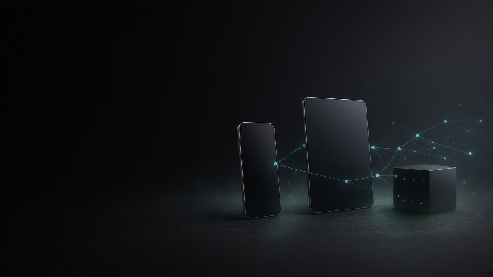
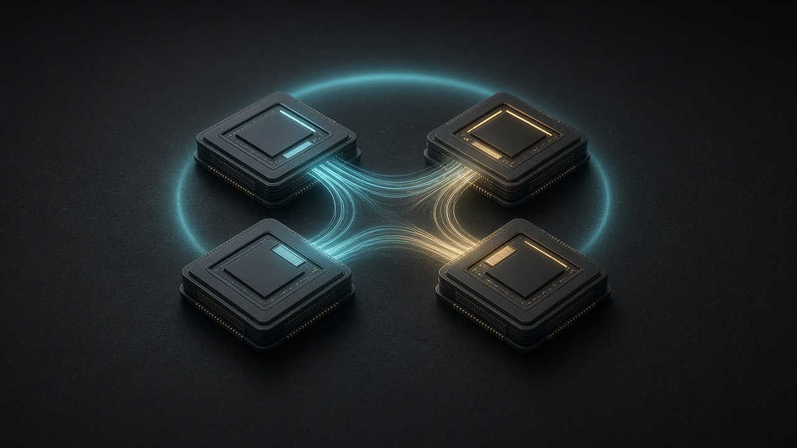
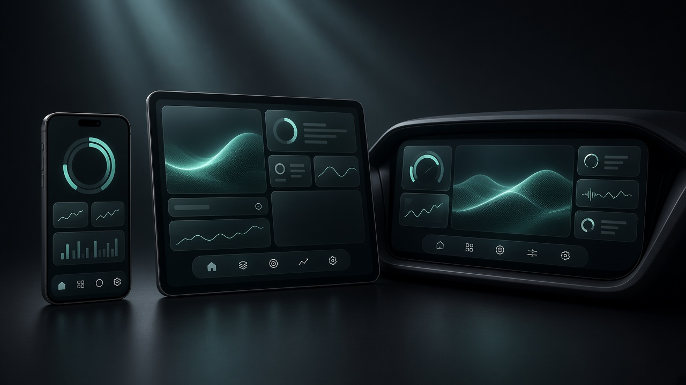
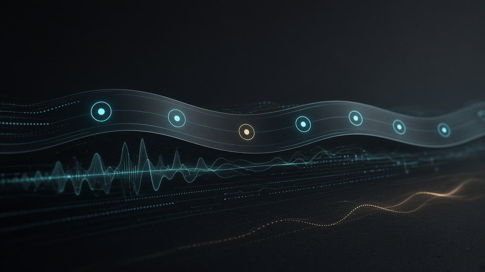
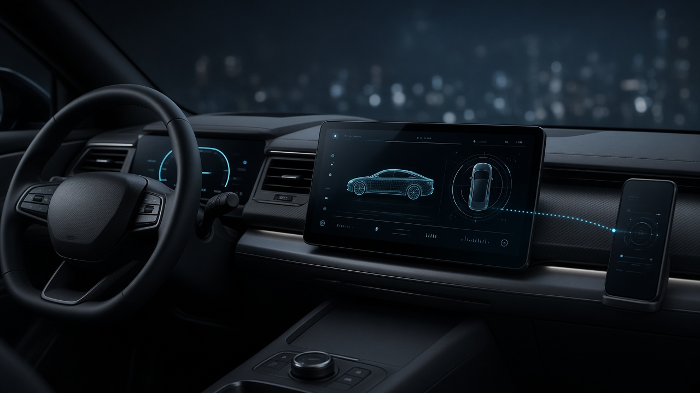
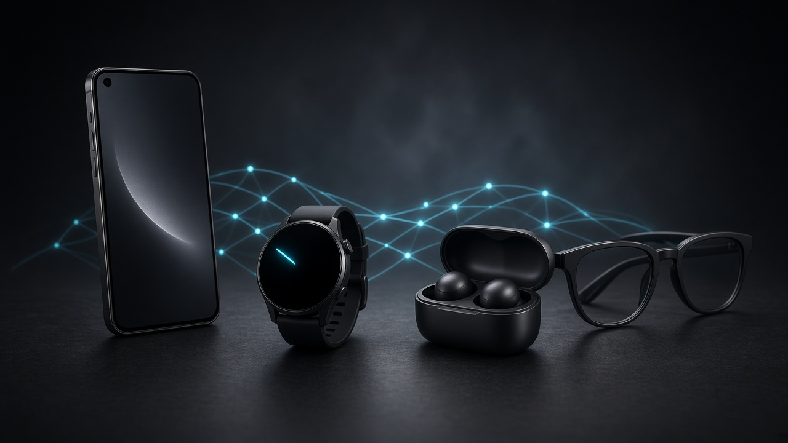
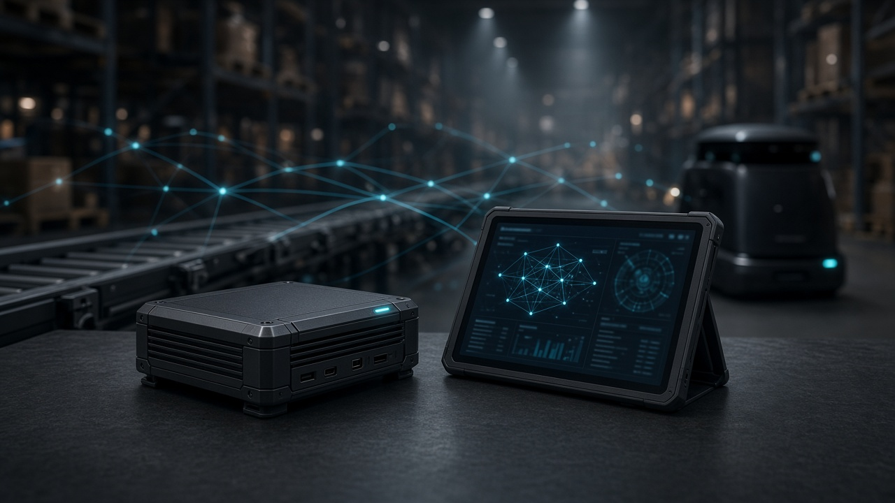
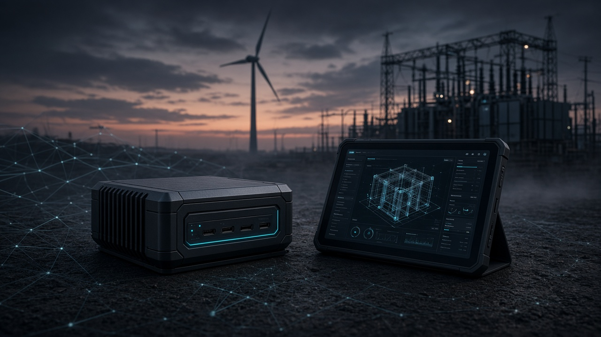

-
01
-
02
-
03
-
04












| Android | RELang OS | |
|---|---|---|
| ART | ||
| Zygote | ||
| Binder | ||
| system_server | ||
| Java / Kotlin | ||
| NDK | ||
| Manifest + uid | ||
| View / Compose |